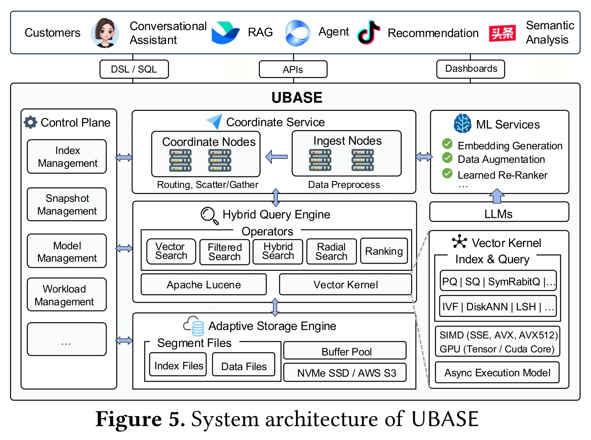
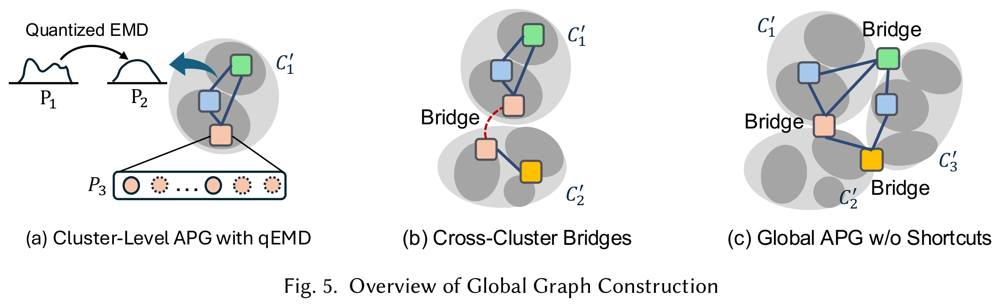
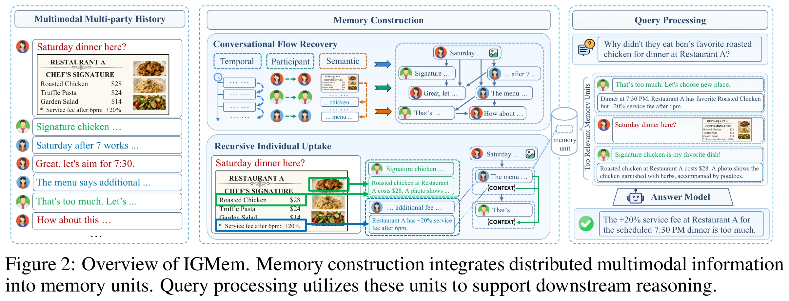

Yao Tian
田瑶Research Scientist at ByteDance
I earned my PhD in Computer Science and Engineering at the Hong Kong University of Science and Technology (HKUST) in 2025, advised by Professor Xiaofang Zhou. During my PhD, I was a visiting scholar at the University of Pennsylvania, where I worked with Professor Ryan Marcus and Professor Zachary Ives. My earlier training was in mathematics, with a bachelor’s degree from Sichuan University and a master’s from Zhejiang University.
Research Interests
- Large-Scale Vector Search
How can we balance latency, accuracy, and memory use when searching high-dimensional embeddings at trillion scale?
Vector quantization · Locality-sensitive hashing · Proximity graph · Multi-vector retrieval · Hybrid search
- Learned Query Optimization
How can a database learn from past queries to choose better execution plans for new ones?
Automatic database tuning · Learned query optimization · Adaptive query execution · Learned index
- Retrieval-Augmented Generation
How can agents organize past experience and retrieve the context they need for future decisions?
Long-term multimodal agent memory · Group memory · Analytic memory · Agentic search
- LLM-Powered Data Systems
How can AI uncover the know-how in data and use what it learns to improve itself?
Data intelligence · Knowledge consolidation · Agent harnesses · Agent self-evolution · Recursive self-improvement
Selected work- RW-TTT
- LLM + Vector Data
- AutoIA
News
Our paper on UBASE, an AI search engine for trillion-scale vector data management at ByteDance, will be presented at ATC 2026.
I serve as an Industry Track Chair for ADMA 2026 in Hong Kong.
Our paper on RW-TTT, which batches LLM requests while keeping their test-time training updates separate, will be presented at EMNLP 2026.
Our new preprint introduces DocNavRAG, which helps agents follow a document’s structure to gather evidence for complex questions.
Our preprint on AdaMM is now on arXiv. It shows how multimodal agents can retrieve, aggregate, and compare observations across interactions.
Show older news
Our paper on GEM, a graph index that links similar sets of vectors for multi-vector search, will be presented at SIGMOD 2026.
I joined ByteDance as a Research Scientist in Shenzhen.
Selected Publications
ATC 2026 UBASE: An AI Search Engine for Trillion-Scale Vector Data Management at ByteDance

A single search workload at ByteDance can add billions of vectors a day. How do you keep a trillion-vector collection searchable while it grows?
SymRaBitQ, a symmetric quantization scheme with theoretical guarantees, lets UBASE build and merge graph indexes directly on quantized vectors. During search, VeloCache keeps frequently visited records in memory to cut SSD reads. Applications can search those vectors through the same OpenSearch interface they use for text.
UBASE powers retrieval for Doubao Work and manages over 300 PB of indexed data across 7,000+ clusters. In benchmarks, it cut peak indexing memory by 80%, served nearly 10× as many queries per second, and reduced serving cost per unit of throughput by up to 99.4%.
SIGMOD 2026 GEM: A Native Graph-based Index for Multi-Vector Retrieval

A passage can be a good match because different words answer different parts of a query. Multi-vector retrieval captures those matches, but comparing a query with every passage is expensive.
GEM builds a graph where each node represents a whole set of vectors. Search starts in several promising regions and skips paths unlikely to lead to a better match. On text and multimodal benchmarks, GEM searches up to 16× faster than competing indexes at the same or better accuracy.
ICLR 2027 IGMem: Interaction-Grounded Memory for Multimodal Multi-Party Conversations

Group memory helps an agent recall what people agreed on and why. The reasoning behind a decision can span several speakers and turns, and two people looking at the same image may be referring to different details.
IGMem traces who replied to whom and links each reply to the words or visual details that prompted it, improving the LLM-Judge score by up to 10.45 percentage points.


Selected Honors & Awards
- ByteDance Soaring Star Talent Program（筋斗云人才计划）
- National Scholarship（国家奖学金， Top 1%）
- First Prize, Chinese Mathematics Competition（全国大学生数学竞赛专业组一等奖）
Connect & Internships
I’m always happy to exchange ideas, discuss research, and explore collaborations on AI and data systems. Feel free to reach out!
If you’re interested in a research internship at ByteDance in Shenzhen, feel free to email me.